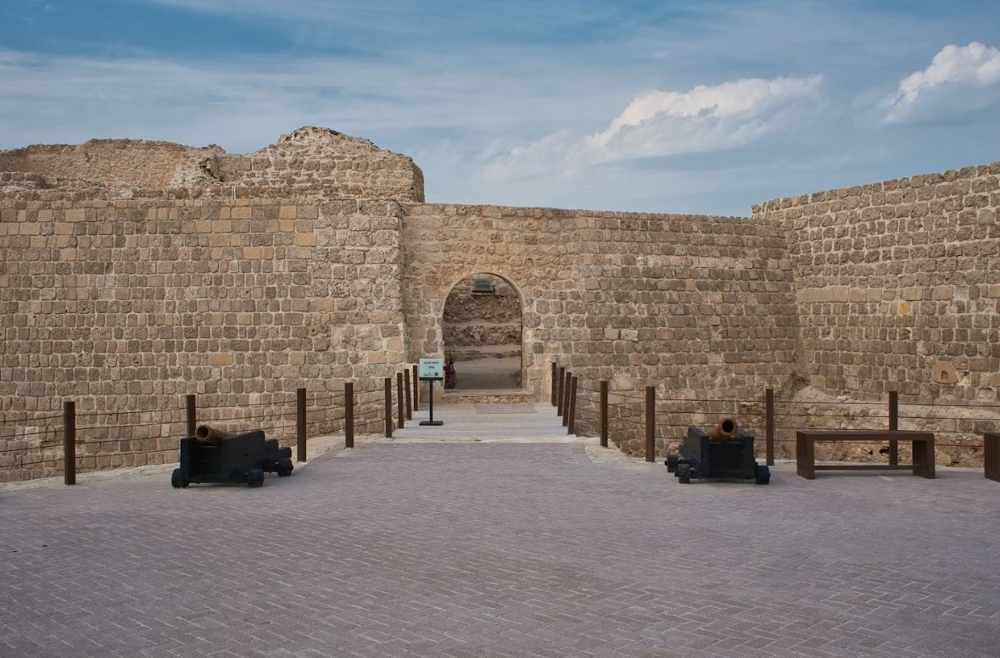
Bahrain Fort
A UNESCO World Heritage Site and one of the oldest forts in the Gulf. Layers of civilisation dating back 4,000 years.
Go at golden hour — the light over the sea is unreal.
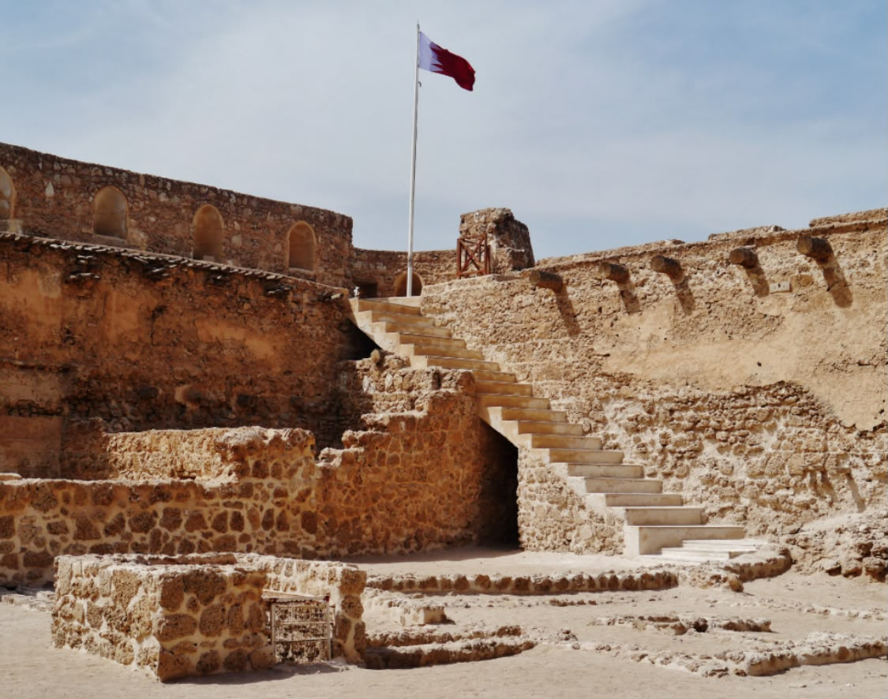
Arad Fort
A beautifully restored Portuguese-era fort in Muharraq. Small but atmospheric, especially at dusk with the water behind it.
Combine with a walk along the Muharraq corniche.

Riffa Fort
Perched on a cliff overlooking Hunanaiya Valley. Stunning views, rich history, and far less crowded than Bahrain Fort.
A true hidden gem.
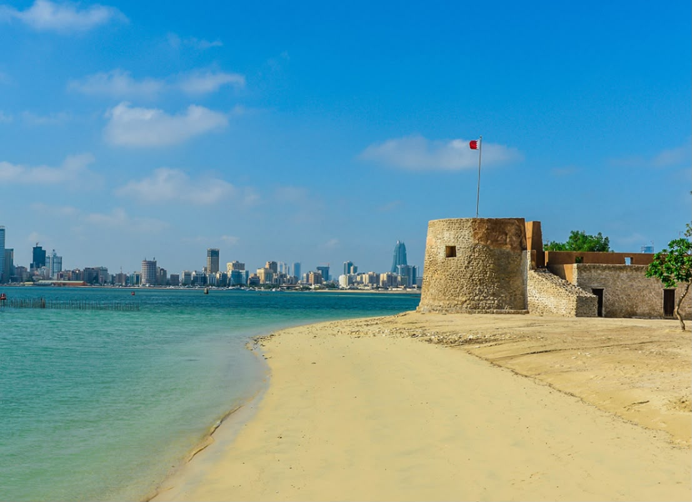
Qalaat Bu Maher
A coastal fort partially submerged at high tide — almost mythical. Accessible by boat from the National Museum.
Ask at the museum about boat trips — it's worth every minute.
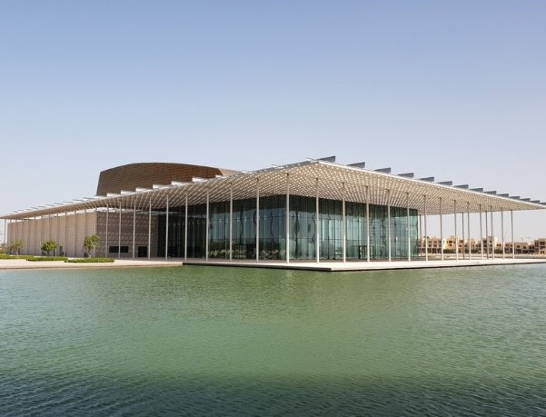
Bahrain National Museum
Brings Bahrain's ancient Dilmun story to life — and is the starting point for the Bu Maher boat ride.
Spend at least 2 hours here.
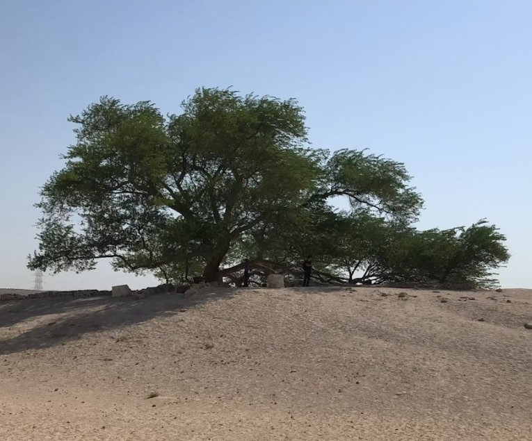
Tree of Life
A 400-year-old mesquite tree standing alone in the desert — no water source, no explanation. One of Bahrain's most mystical spots.
Best visited at sunset or under a full moon.

Al Bilaj Beach
One of Bahrain's most serene and unspoilt beaches — far from the crowds, with calm clear water and raw natural beauty.
Perfect for a quiet sunrise — bring your own refreshments.

Al Areen Wildlife Park
Bahrain's only wildlife sanctuary — home to Arabian oryx, gazelles, and ostriches roaming freely across a protected desert reserve.
Go in the morning when animals are most active.
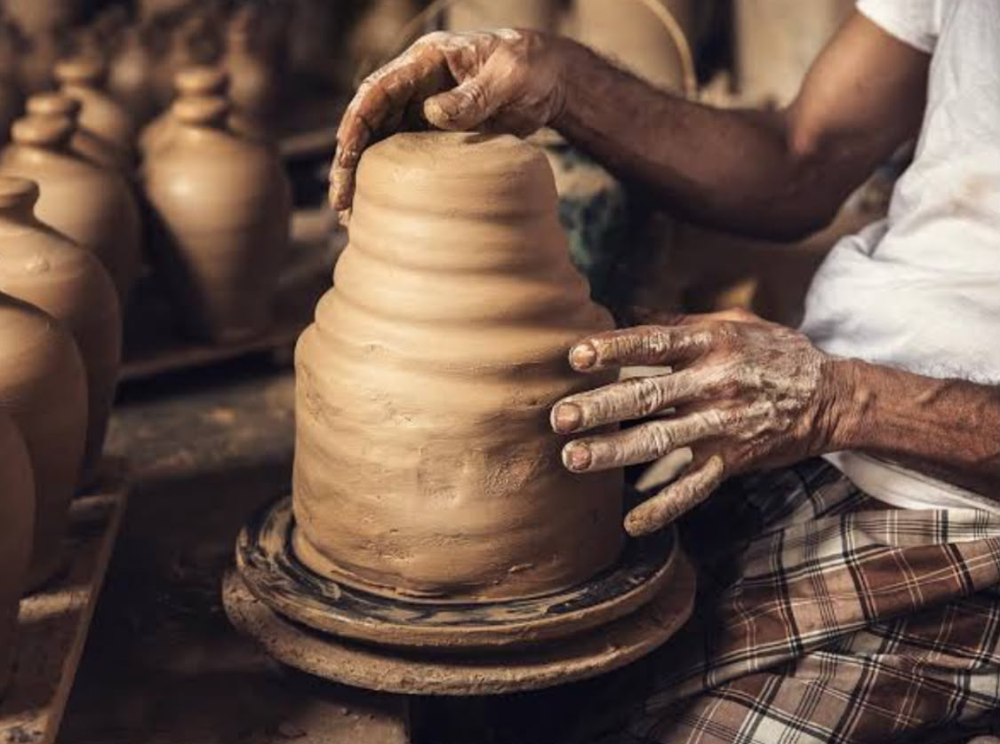
Pottery Village — A'ali
The oldest continuously working pottery village in the Gulf. Watch craftsmen shape clay the way their ancestors did centuries ago.
You can try making your own piece at some workshops.
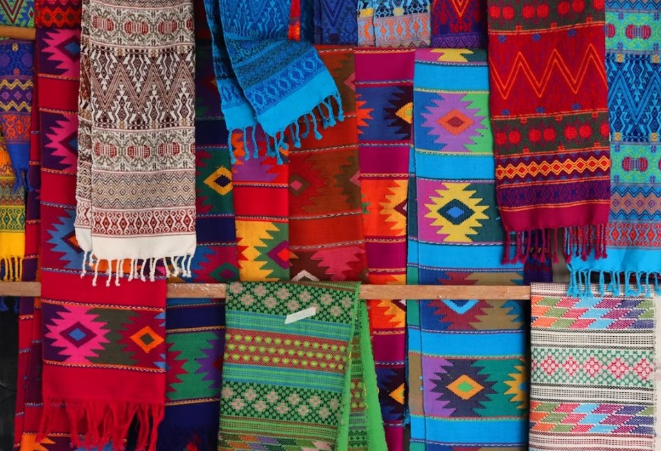
Alnaseej Textile Factory
A traditional textile factory in Muharraq where craftsmen weave fabric on ancient wooden looms. A living piece of Bahraini heritage.
Go on a weekday morning to see the weavers actively working.
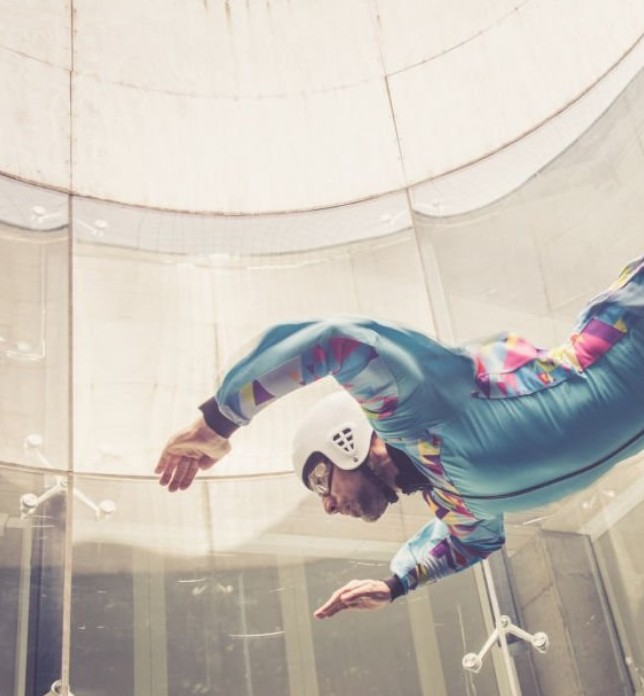
Gravity Indoor Skydiving
Bahrain's wind tunnel experience — the closest thing to freefall without jumping out of a plane.
Book in advance — slots fill up fast on weekends.
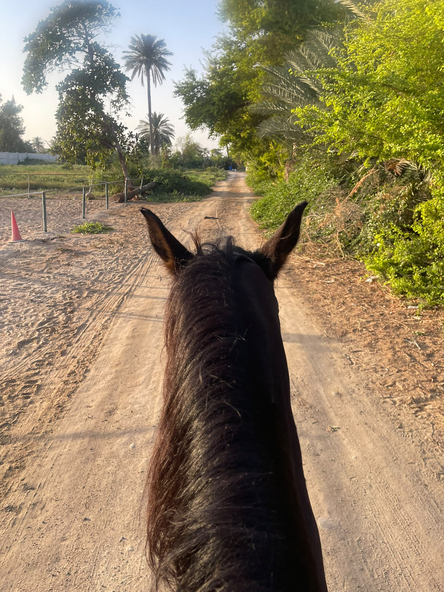
Horse Riding
Guided rides through Bahrain's desert landscape at sunrise or sunset across open terrain.
Early morning rides are cooler and the light is beautiful.
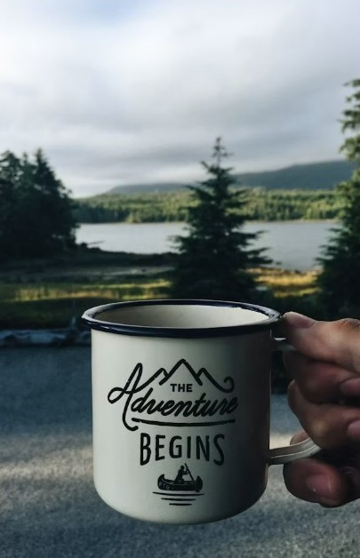
Cycling
Bahrain has a growing cycling scene with dedicated tracks and open coastal roads.
Sheikh Nasser Loop in Zallaq — flat, coastal, stunning at golden hour.
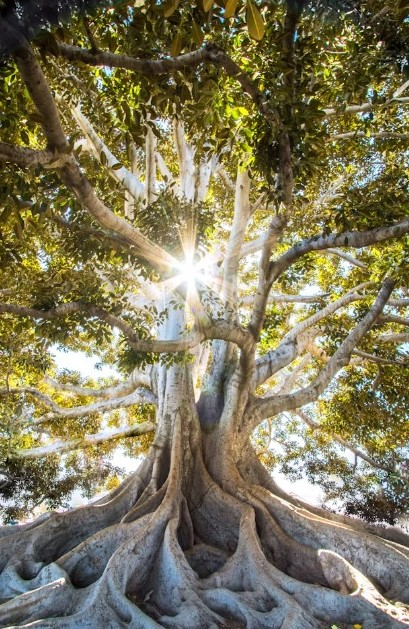
Kayaking & SUP
Paddle through Bahrain's calm coastal waters and mangroves, or try stand up paddleboarding on the flat calm sea.
The Tubli Bay mangroves at sunset are unmissable.

Boat Rides
Explore Bahrain's coastline and nearby islands by boat — a completely different perspective of the island.
Sunset boat tours are especially magical.
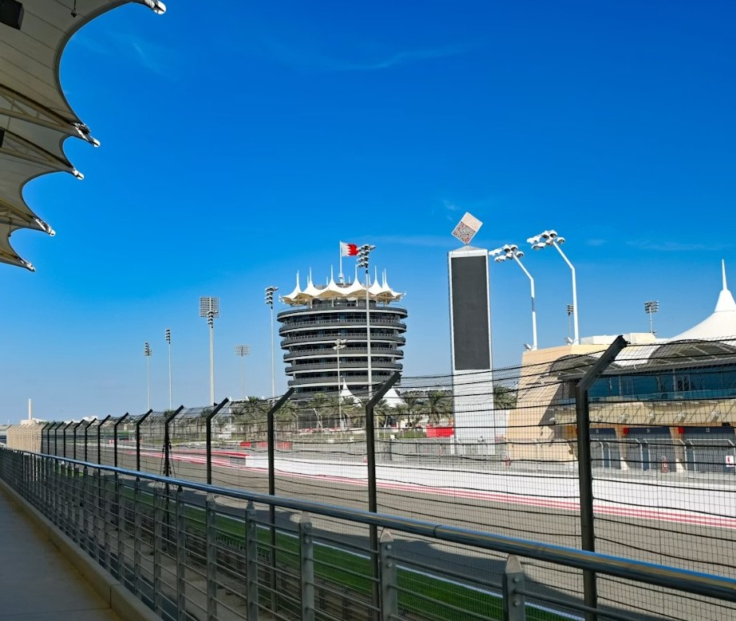
Go Karting & F1 Circuit
World class karting facilities near the iconic F1 circuit. Great for a competitive day out.
Bahrain International Circuit offers karting on race weekends.
Hajis
A legendary Bahraini breakfast institution in old Manama. Locals have been coming here for generations.
@hajiscafeDanet AlTawawish
A traditional Bahraini restaurant in Manama. Must try their Mahyawa bread with cheese (مهياوة وجبن).
📍 Google MapsBaba Taher
A beloved old-school Bahraini bakery and sweet shop. Famous for fresh pastries and traditional Bahraini sweets.
@baba_taher_restaurantEmmawash
A traditional Bahraini seafood restaurant rooted in the island's fishing heritage. Rich, spiced fish dishes served over rice.
@emmawash_bhDarseen Cafe
Nestled inside the Bahrain National Museum. Known for cinnamon-infused drinks and a traditional Bahraini breakfast spread.
@darseencafebhSharbet Saffron Cafe
Famous for golden saffron drinks and traditional morning dishes — a daily ritual for many Bahrainis.
@sharbet_saffronTren Tren
Best known for their Riyash — juicy, perfectly charred lamb chops that keep people coming back.
The Riyash is the star — don't leave without ordering it.
@trentren.bhBu Jamal
A beloved grill institution in Riffa. The spicy yogurt tikka is a standout dish you won't find done better elsewhere.
Ask for the spicy yogurt tikka — it's the one to order.
📍 Google MapsBBQ Town
A one-of-a-kind outdoor dining experience in Bilad Al Qadeem. Their Rughab (رقبة) — neck meat slow-cooked in BBQ sauce — is unforgettable.
Go with a group so you can try as many dishes as possible.
@bbq_.townSaber Ayoob
A reliable Bahraini grill chain all around the island — an easy go-to for quality tikka, kebab, and grills.
Great for a quick, no-fuss grill fix anywhere in Bahrain.
@sabarayoobrestaurantKwar
Found across Bahrain. Their cheesy scrambled eggs are legendary and the tikka maqliya (fried tikka) is crispy and deeply flavourful.
The cheesy scrambled eggs and fried tikka are not to be missed.
@alkwarKhan Baghdad
An Iraqi cuisine gem. Known for authentic Reghab (رقبة) and an Iraqi kebab unlike anything else on the island.
The Iraqi kebab is unlike any other kebab in Bahrain — a must try.
@khan_bghdadAsmak Alseef
Particularly known for seabass, seabream, and safee fish (سمج صافي). Fresh, well-prepared, and a solid choice.
The seabass and safee fish are the ones to order.
@alseef.fishFish Line
Located on Budaiya Road. A comprehensive seafood menu covering all the classic Bahraini fish dishes.
A solid all-rounder — good for the whole family.
@fishline.bhTabreez
A sprawling outdoor garden restaurant and seafood market. Famous for safee fish (سمج صافي) with muhammar rice (عيش محمر) — sweet, savoury and deeply Bahraini.
The safee fish with muhammar rice is the signature dish.
@tabreez_restaurant
Farmers Market — Hoorat Aali
A vibrant weekly market in the village of Aali featuring fresh local produce, homemade goods, and artisan crafts.
Go early on market day — the best stalls sell out fast.